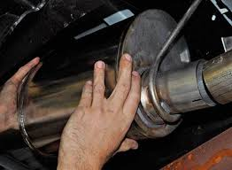
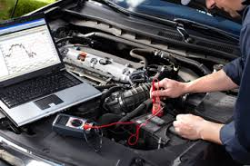
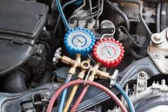
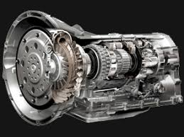

Automotive Services
 |
Brakes Free Inspection Repair or replace Pads, Rotors, Calipers Fluid-Flush |
 |
Exhaust System Free Inspection Repair or replace Mufflers and Pipes, Cataylic Converters, O2 Sensors Emission Testing |
 |
Electrical System Free Battery Check Diagnose faulty circuits Check Engine Light, ECM Check |
 |
Heating and Cooling Free Inspection Pressure test system Compressor, Airflow, Freon, Filter Temperature Test |
 |
Fluids Free Inspection Fluid top off or flush and replace Oil, Brake, Powersteering, Transmission, Differential, Windshield Washer |
 |
Transmission Free Inspection Repair or replace Driveline, Axles, Flywheel, Clutch, U-joints, Differential, Flush |